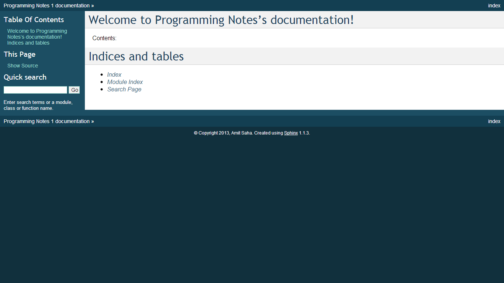
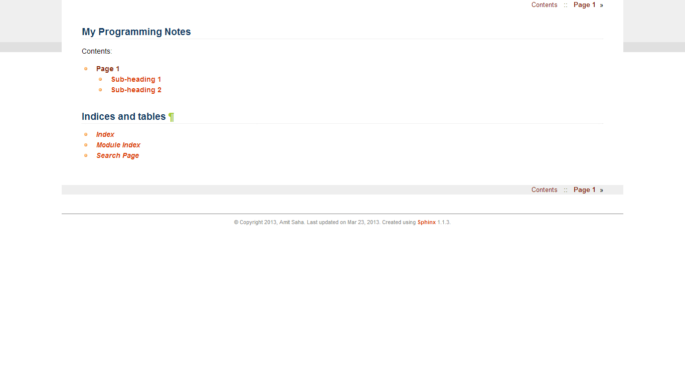

In this article, we will take a look at Sphinx (specifically Sphinx 1.1.3) as a static site generator tool. Let’s get started.
Installing sphinx is as easy as pip install sphinx (on Linux and Windows). pip will download a bunch of other dependencies (docutils, Jinja2, pygments as well). Once installed, check whether sphinx is available to you by typing $ sphinx-quickstart at the command line. This should give you a welcome message. We proceed from there in the next section. (On Windows, if you have added C:\Python27\Scripts to the Windows Path variable, the sphinx commands should be already available to be executed since the sphinx binaries are also installed in this location).
Go to your directory (say demo) where you want to create the content of your static site and execute the sphinx-quickstart command. It should display a welcome message and start a wizard asking you various questions about your new site.
The executable now creates a directory structure, and you will see the directories _build, _static, _templates and the files conf.py, index.rst, make.bat, Makefile created in the current directory for you.
We will soon understand in detail what each of these are and how we can start creating content for the site. Before that, type make html in the directory where you created the directory structure. This command builds the HTML for your site, and places those files in the directory html under _build. You will notice that there is a index.html file in that directory. This is your homepage or the master page of your site. Open this file in your browser. You should see a web page similar to this one:
Now, we shall see how we can add content to our static site. It is a two step process:
For example, create a new file with the name page1.rst and add the following text to it:
Page 1
------
This is a new page
Sub-heading 1
=============
Sub-heading 2
=============
Now, add this page name to the to the file index.rst which should then look as follows:
Welcome to Programming Notes's documentation!
=============================================
Contents:
.. toctree::
:maxdepth: 2
page1
Indices and tables
==================
* :ref:`genindex`
* :ref:`modindex`
* :ref:`search`
Now, rebuild the HTML pages using make html. If you reopen (or refresh) the index.html page, you will see that it has links to the contents of page1.rst. The .. toctree directive does all the magic of creating the table of contents on this page, and you can control the depth of the table of contents using the number after :maxdepth.
The default configuration generated by sphinx may well suffice your needs, but let us spend some time tinkering with it to customise the HTML output (and in the next section, use sphinx extensions).
conf.py in your static site root directory is a Python file which contains all the configuration details used by sphinx when you trigger a build process. There are a number of configuration statements for LaTex, Unix man page and Windows help file output, which you can remove, since we only plan to generate HTML output. That will leave the default and HTML specific configuration options. As you will notice, this file has been created from your responses to the sphinx-quickstart command. The conf.py file after tweaking and customizing looks like this (along with the associated comments; created using pycco).
There are a number of default themes that you can use and you can create your own too. See this page for details.
Read all about the options for HTML output here.
I also changed the index.rst file to have a different heading. Rebuild the HTML pages and now the index page looks similar to:
Sphinx extensions extend Sphinx’s functionality in various ways. There are a number of builtin extensions, two of which we included during the initial setup: todo and mathjax.
The .. todo: (doc) directive can be used to insert TODO place holder text:
.. todo::
Add text here
To display them in the HTML pages, include the following in conf.py:
# Include todos
todo_include_todos = True
Using this extension renders math using Mathjax. To include math equations in your pages, use the ::math directive. For example: :math:`ax^2+bx+c`, will render the equation as you can see in the HTML of page1.html. The input language is LaTex. Equation blocks may be written, like so:
.. math::
ax^2 + bx + c = 0
x_1 = \frac{-b+\sqrt{b^2-4ac}}{2a}
x_2 = \frac{-b-\sqrt{b^2-4ac}}{2a}w
To learn more, see here.
Besides the builtin extensions, there are a number of others written by various authors maintained in the sphinx-contrib repository.
You can clone the repository, and install each extension on its own, or you could use pip with the appropriate package name from PyPI.
The youtube extension allows embedding YouTube videos in your HTML pages. To install it, go to the youtube directory of the sphinx-contrib clone/download and install the extension using python setup.py install.
You also have to add this extension to the list of extensions in conf.py as: 'sphinxcontrib.youtube'.
To embed a video, find out its YouTube ID and you are done. For example, to embed this PyCon 2013 Talk by Doug Hellmann, you would do something like:
.. youtube:: 8vwtgMkqE9o
:width: 640
:height: 480
If you now rebuild your pages, you will see the YouTube video embedded in that page. For other options supported by this extension, see here.
The piechart extension allows you to render charts and graphs using Google chart. You can install it similarly as above and add 'sphinxcontrib.googlechart' to the list of extensions in conf.py.
For example, the following example from the documentation will render a Venn diagram
.. venndiagram::
data: 100, 80, 40, 20, 20, 20, 10
To learn more about this extension, see here.
To share your HTML pages on the Internet, you have various options.
If you already have an account on a web host, simply copy the contents of the html sub-directory to an appropriate location of your web host and you are done.
If you are going to store your sphinx root directory in a public source code repository, you can use read the docs. I highly recommend using this option if you are going to store your documentation sources in a public repository. Once you have setup the appropriate hook, your sources would be built automatically everytime you push a change.
This is the option I will describe in some detail, since it may be a little involved and also I haven’t tried this yet, myself.
First, create a new empty repository with no README on GitHub. Let’s call it site. Now, clone the repository:
git clone https://github.com/amitsaha/site.git
Cloning into 'site'...
warning: You appear to have cloned an empty repository.
Create a gh-pages branch in your repository and switch to it:
git checkout -b gh-pages
Create an empty file with the name .nojekyll. This is to allow us to use file and directory names beginning with _, as it tells Jekyll not to process it. (See here for the background). You will recall that we have directories such as _static and _templates generated by Sphinx in html directory, and hence we will need to create this file.
touch .nojekyll
Now, let us say that you want to store your HTML files in a separate directory, called demo:
mkdir demo
Now, copy all the files and directories in html directory to this directory.
Add the demo directory and .nojekyll file to Git and commit the changes:
git add .nojekyll
git add demo
git commit -m "Created .nojekyll and first commit of static HTML"
Now, push the gh-pages branch to the remote repository:
git push origin gh-pages
Once that is complete, you can now go to the URL: http://github-user-name.github.com/site/demo to see your pages. See this page as an example.
You can of course now have multiple directories in the site repository and then you can host a different set of static pages.
In this article, I have discussed how Sphinx can be used to create a set of HTML pages with the ability to embed code, images, YouTube videos and charts. We created the content in reStructuredText and then used Sphinx’s build tools to convert them into a set of standalone HTML pages. We also looked at a few ways we could host these pages and make them available publicly.
The demo Sphinx project can be found in demo.
In a next article, we will focus on creating documentation which is coupled with a software project and explore Sphinx’s various features useful in such a scenario.
{kind=link}
{kind=link}